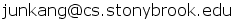

ConnotationWordnet:
Learning Connotation over the Word+Sense Network
Learning Connotation over the Word+Sense Network
Abstract
-
We introduce ConnotationWordNet, a connotation lexicon over the network of words in conjunction with senses. We formulate the lexicon induction problem as collective inference over pairwise-Markov Random Fields, and present a loopy belief propagation algorithm for inference. The key aspect of our method is that it is the first unified approach that assigns the polarity of both word- and sense-level connotations, exploiting the innate bipartite graph structure encoded in WordNet. We present comprehensive evaluation to demonstrate the quality and utility of the resulting lexicon in comparison to existing connotation and sentiment lexicons.
Lexicon List
- - Download: ConnotationLexicon v1.0
- * For brevity, sense nodes are represented by the first synonym of the synset.
Paper
Citation
-
Please cite the following if using the data on this page.
@InProceedings{kang-EtAl:2014:P14-1,
author = {Kang, Jun Seok and Feng, Song and Akoglu, Leman and Choi, Yejin},
title = {ConnotationWordNet: Learning Connotation over the Word+Sense Network},
booktitle = {Proceedings of the 52nd Annual Meeting of the Association for Computational Linguistics (Volume 1: Long Papers)},
month = {June},
year = {2014},
address = {Baltimore, Maryland},
publisher = {Association for Computational Linguistics},
pages = {1544--1554},
url = {http://www.aclweb.org/anthology/P14-1145}
}
Contact
-
We welcome any comments or questions about the project or the data.
Please contact Jun Kang at 